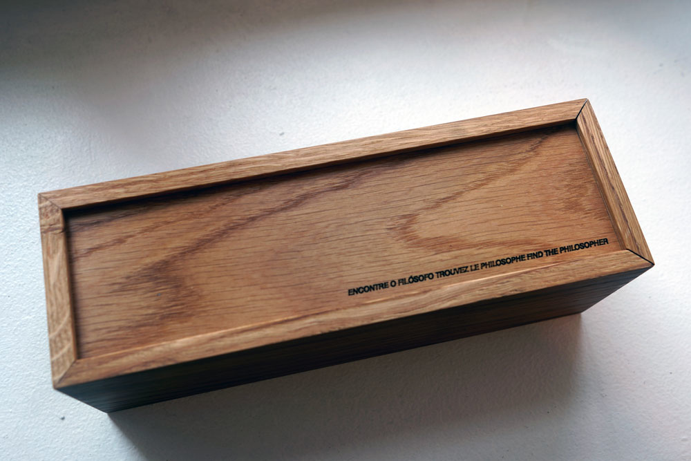
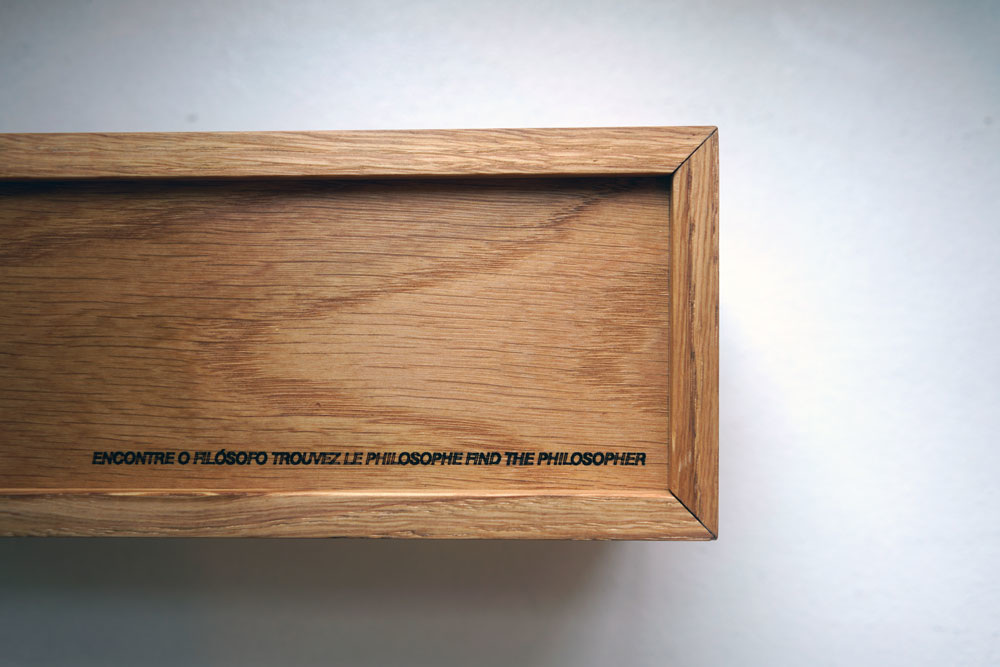
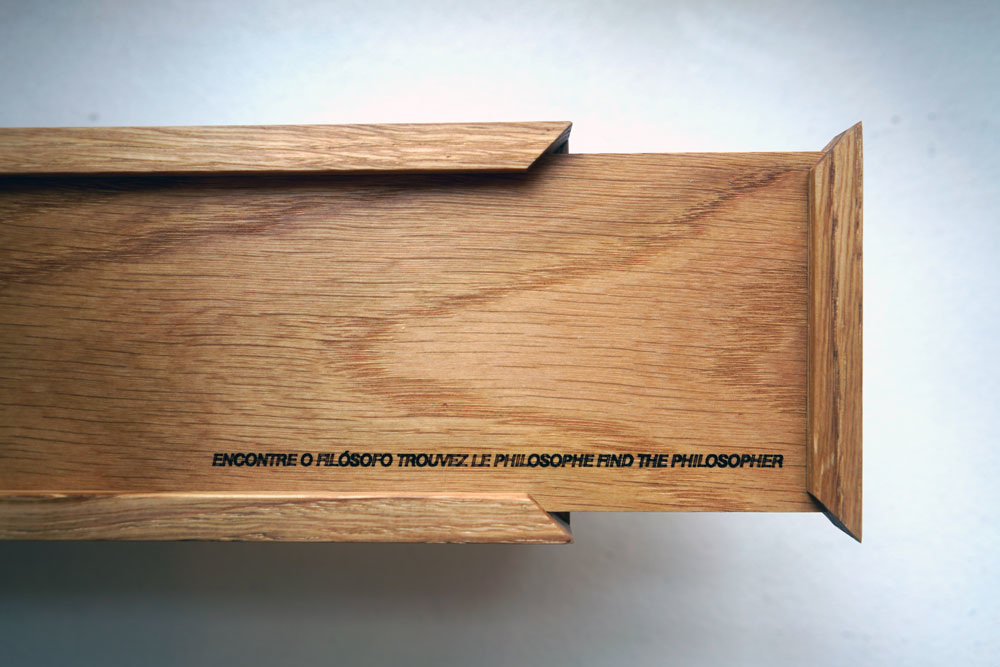
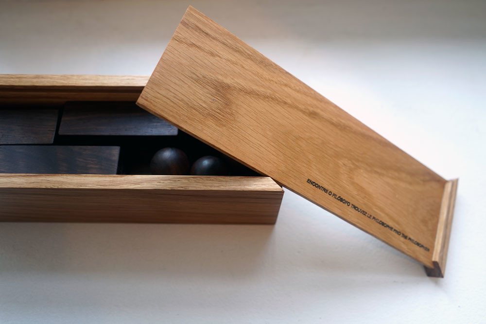

Encontre o Filósofo / Find the Philosopher
Encontre o Filósofo / Find the Philosopher, 2019
Madeira, aço / Wood, steal
Escultura-brinquedo / Sculpture-toy
9 x 9 x 27 cm
Trata-se de um brinquedo feito de madeira, com 7 bonecos desmontados [7 cabeças separadas de 7 corpos] e o processo do jogo é montar cada cabeça com cada corpo correspondente. Ao final o jogador perceberá que a última cabeça não cabe no último corpo, eles não encaixam: então você encontrou o filósofo!
This is a wooden made toy with 7 dolls disassembled [7 heads separated from 7 bodies] and the game is to assemble each head with each matching body and, at the end, there will be left a head and a body that do not fit together: So you found the philosopher!



